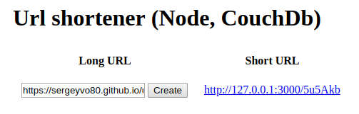
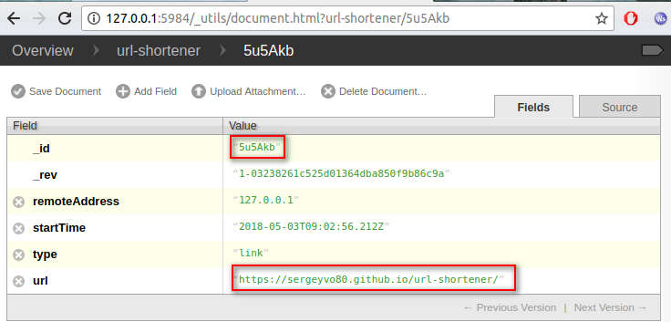
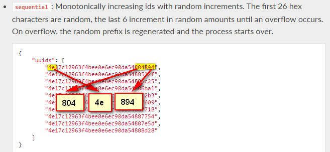

Web application creates, stores and processes a short link. The web application is based on node express, CouchDB is used to store the links. 
if you do not have an node.js you need to install https://nodejs.org/en/download/package-manager/
if you do not have an CouchDB you need to install http://docs.couchdb.org/en/2.1.1/install/index.html
git clone https://github.com/sergeyvo80/url-shortener.git
Rename config-dist.js to config.js. If necessary, correct the host, hostdb and etc settings for the web application.
npm i
npm start
CouchDb is used to store the links. Every link this document with a key to the corresponding short link. 
To verify the existence of a real link, use the view of CouchDB.
Now for generate short uud uses a couchDB uuid generator, from a long uuid the short uuid is computed, and is encoded from the hexagonal to Alfabet 58 characters. 
If a document with such a uuid already exists, then we will create a document with a different short uuid generated from the second uuid, which we received from the CouchDB uuid generator.